1. 部署機EC2 安裝相關工具
要部署完整的EKS，需要整合一些相關工具集來滿足，其中動作包含
而各別對應的工具直接寫在後面
- 操作AWS operation →
awscli - 建立EKS →
eksctl - 以及操控Kubernetes →
kubectl
step1. kubectl
- Kubernetes 使用名為kubectl 的命令列公用程式與叢集API 伺服器通訊(master node)
1 | #1 download kubectl tool |
2 | |
3 | sudo curl --location -o /usr/local/bin/kubectl https://amazon-eks.s3.us-west-2.amazonaws.com/1.16.8/2020-04-16/bin/linux/amd64/kubectl |
4 | |
5 | #2 使kubectl 成為可以執行檔 |
6 | sudo chmod +x /usr/local/bin/kubectl |
7 | |
8 | #3 確認kubectl 已正確安裝 |
9 | kubectl version --short --client |
安裝訊息以及測試kubectl是否成功
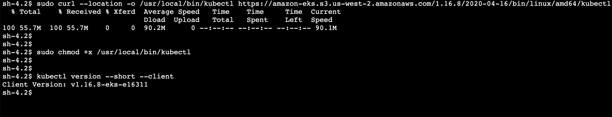
step2. eksctl
- Amazon EKS 世界中可以快速操控Kubernetes 叢集，eksctl 命令列公用程式提供最快且最簡單的方式，讓您使用的節點建立新的叢集Amazon EKS
1 | curl --location "https://github.com/weaveworks/eksctl/releases/latest/download/eksctl_$(uname -s)_amd64.tar.gz" | tar xz -C /tmp |
2 | |
3 | #2 |
4 | sudo mv -v /tmp/eksctl /usr/local/bin |
5 | |
6 | #3 |
7 | eksctl version |
安裝結束訊息以及測試eksctl是否成功
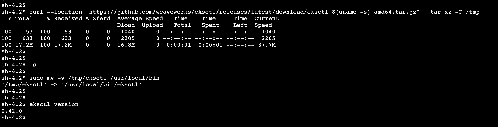
以上的部驟皆是前置作業，我們準好了操作AWS operation 的
awscli，建立EKS 的eksctl，以及操控Kubernetes 的kubectl
2. 部署 AWS EKS cluster
step1. 透過eksctl 部署EKS 叢集
- EKS 是很彈性的，你可以建立正規的3台EC2為基底的EKS，你也可以建立1台的EC2的EKS
參數說明
-name可讓您指定 Amazon EKS 叢集的名稱-nodegroup-name可讓您指定 Amazon EKS 節點群組的名稱- `-node-type` 指定工作者節點使用的執行個體類型，而完整的EC2支援清單請見awslabs/amazon-eks-ami[1]
-nodes指定在所需的自動調整規模定義期間部署的節點數目-nodes-min針對節點群組設定 Amazon EC2 Autoscaling 組態中的節點數目下限-nodes-max針對節點群組設定 Amazon EC2 Autoscaling 組態中的節點數目上限-managed建立 Amazon EKS 受管節點群組-version指定要在 Amazon EKS 叢集上部署哪個版本的 Kubernetes-region指定要部署 Amazon EKS 叢集和節點群組的 AWS 區域。如果未包含arg旗標資訊，eksctl 公用程式會預設為 us-west-2 區域
1 | |
2 | #1 EKS with 3 nodes |
3 | export AWS_REGION=us-west-2 |
4 | |
5 | eksctl create cluster \ |
6 | --name dev-cluster \ |
7 | --nodegroup-name dev-nodes \ |
8 | --node-type t3.small \ |
9 | --nodes 3 \ |
10 | --nodes-min 1 \ |
11 | --nodes-max 4 \ |
12 | --managed \ |
13 | --version 1.16 \ |
14 | --region ${AWS_REGION} |
15 | |
16 | # Thin cluster with EKS |
17 | |
18 | eksctl create cluster \ |
19 | --name dev-cluster \ |
20 | --nodegroup-name dev-nodes \ |
21 | --node-type t3.micro \ |
22 | --nodes 1 \ |
23 | --managed \ |
24 | --version 1.16 \ |
25 | --region ap-southeast-1 |
命令執行i 會在你的本機下 ~/.kube/config 建立組態檔案，也稱為 kubeconfig。kubeconfig 包含有關 Amazon EKS 叢集的詳細資訊，包括
叢集名稱和身分驗證方法
建立叢集的 IAM 角色或使用者會自動新增到 Kubernetes RBAC 組態中的 system:masters 群組，使其成為 Kubernetes 叢集的全權管理員。在授與其他許可之前，它也是唯一可以存取叢集的角色或使用者。本此實驗中，EC2堡壘主機擔任的 IAM 角色就是建立叢集的角色，所以我們把system:masters綁給K8s RBAC
部署觀察
時間
開始時間07-39 → 結束時間08:00 一共花費 21分鐘
*官方說明叢集花費時間為15 - 20分鐘，依我自已的經驗不論是1個node或是3個node都要花費走過15分鐘
1個node ECS 共花費 17分鐘
3個node ECS 共花費 21分鐘
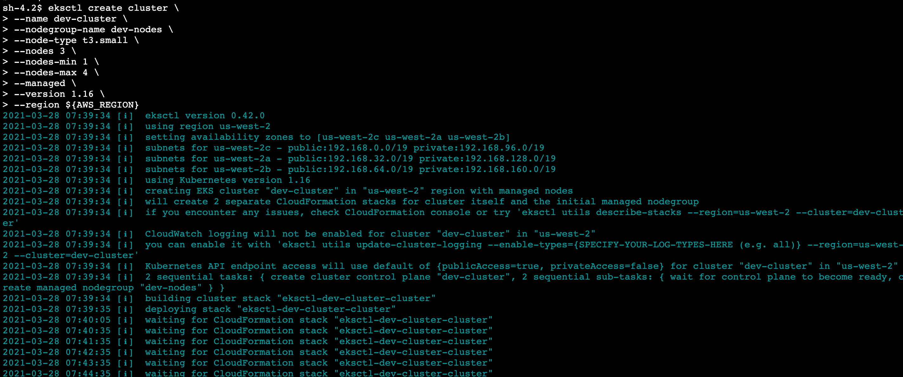
參數執行
- 其中3個node, EC2 平均分散在
us-west-2a,us-west-2b,us-west-2c，此舉協助EKS提高HA保護 - 每一個node 中都會使用一對網路，分別為
public subnet,private subnet - 接下來透過CloudFormation幫忙設定K8s和
instance group - 透過AWS 代管的EKS Control Plane，也在此生成Kubernetes API Endpoint供你的worker node 管理，直到三個node 安裝所有kuberntes stack套件
- 部署的尾聲 eksctl 會協助建立新的kubeconfig，它一個kubernetes登入檔，位置在 /home/ssm-user/.kube/config
- 最後你可以用kubectl get nodes 來確認EKS 狀態
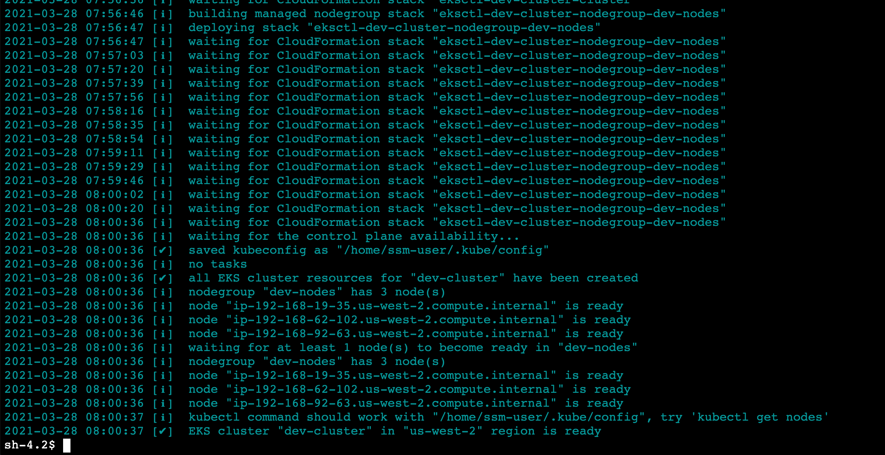
step2. 測試EKS cluster
- 透過 kubectl get nodes 來確認EKS, 底層EC2 worker node狀態
1 | kubectl get nodes |
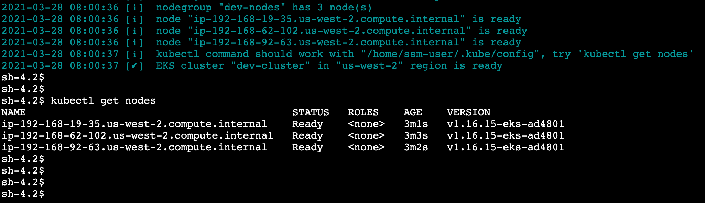
透過UI 檢視底層EC2 worker node狀態
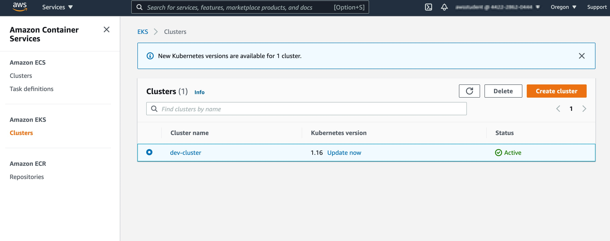
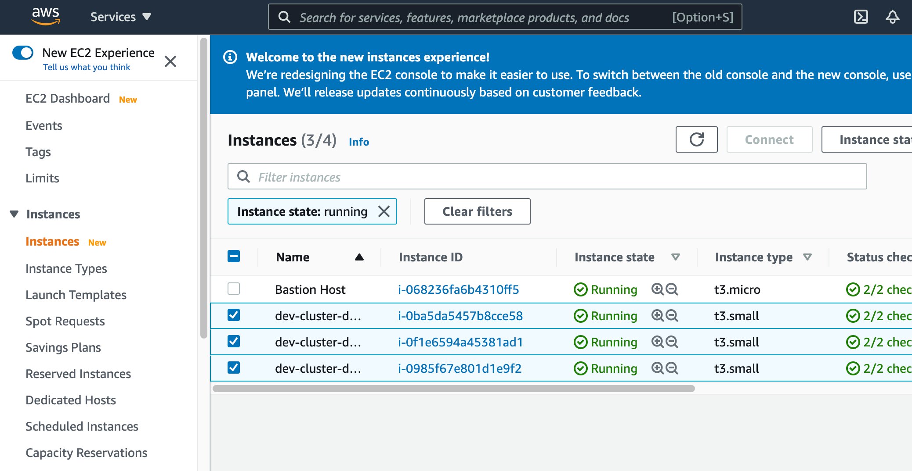
#1 測試：部署Application to EKS from ECR
Amazon Elastic Container Registry (ECR) 是一個全受管的Docker 容器登錄檔，可讓開發人員輕鬆存放、管理以及部署Docker 容器映像。
step1. Image URI
- 我們先把可運行的docker image push to ECR
- image URI:
199679544872.dkr.ecr.ap-southeast-1.amazonaws.com/demo-aws
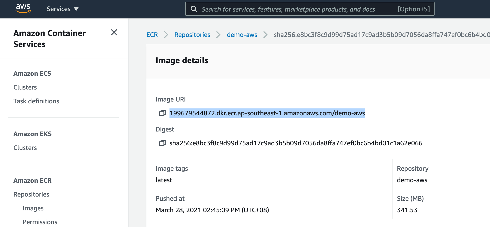
step2. kubectl run
- 最直接的測試方試就是使用kubectl run 指定你的docker image位置，也就是上面所述的 image URI
1 | kubectl run demo-aws --image=[199679544872.dkr.ecr.ap-southeast-1.amazonaws.com/demo-aws](http://199679544872.dkr.ecr.ap-southeast-1.amazonaws.com/demo-aws) |
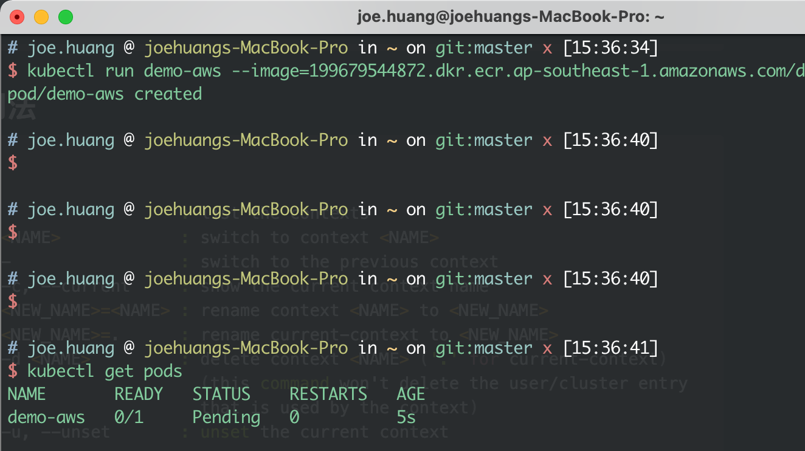
step3. 透過AWS Load Balance 對外公開服務
- 預設的kubernetes 生起service endpoint，只能是對內的服務更白話的說，就是只能在叢集內溝通。我們可以透過kubectl expose 結合AWS Load Balance 對外公開服務，指令可以自動配對Classic Load Balancer
- 或許你會好奇，為什麼AWS可以如何簡單介接到AWS Load Balance？因為，EKS為代管的control plane，它本身就是API Endpoint，而AWS EKS在你一開始做授權的動作時，就可以讓EKS可以跟你的NLB溝通
- 當然你的service，若是L7層級的，你也可以交換Load balance種類為ALB[7]
1 | |
2 | kubectl expose pod demo-aws --type=LoadBalancer --name=demo-aws-service --port 80 |
3 | |
4 | #Exposed: |
5 | [http://a84693be9eb304dd1bb31dad9ab07e73-1331634835.ap-southeast-1.elb.amazonaws.com/](http://a84693be9eb304dd1bb31dad9ab07e73-1331634835.ap-southeast-1.elb.amazonaws.com/) |
執行結果，並產生URL
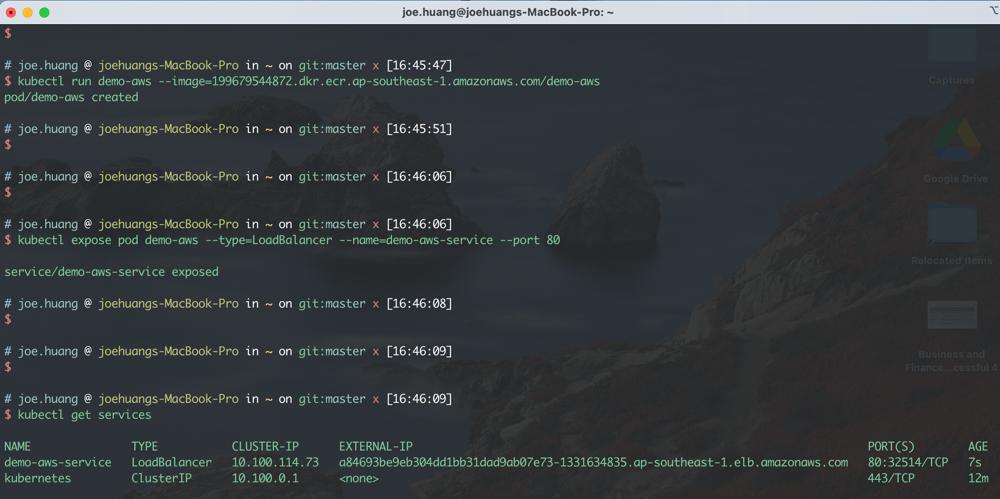
step4. 驗證 demo-aws 網頁內容
- 上面部驟準備的docker image是封裝 node.js 網頁服務
- 因此，你可以在網頁上看到 “Hello World” 文字
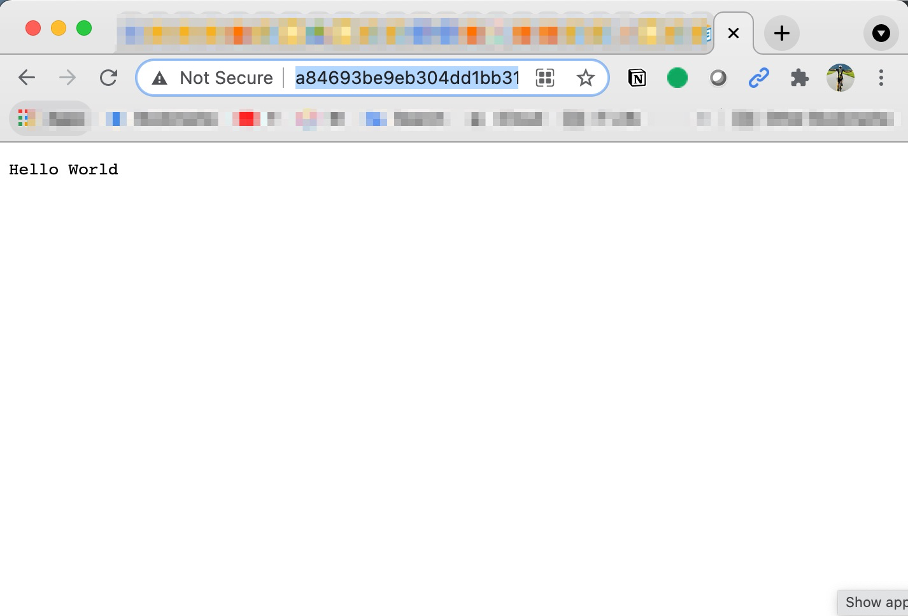
網路相關設定
Load Balancer 設計
- 透過kubectl expose 產生的URL後，他會對應到在ap-southeast backend 的三台instance
- 你必須確定backend它們的status為
InService，以及Heathly為Yes，代表為load balance的分流路徑走向是正確的 - 筆者在之前實驗中，使用1個node EKS，造成Instance ID status 為OutofService，此情形即使LB 產生URL，但你依究無法讓request 導入backend
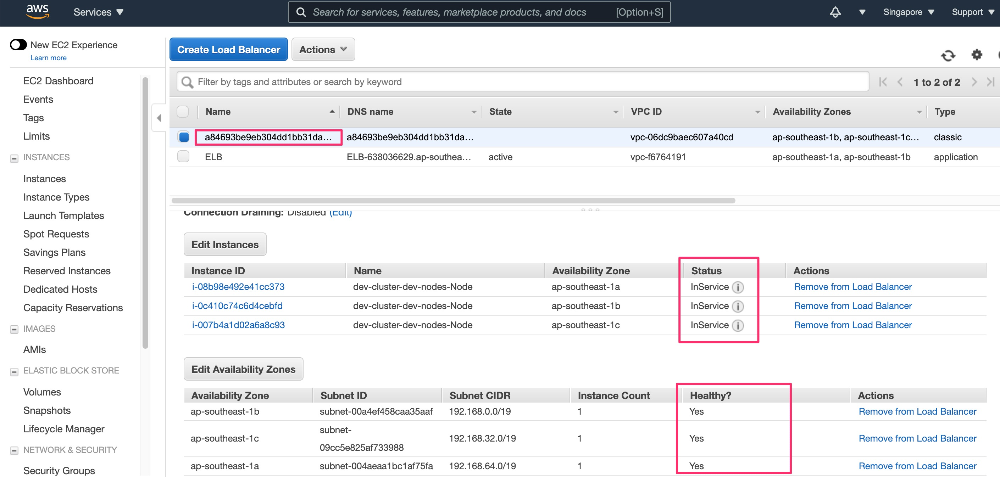
EKS VPC 設計
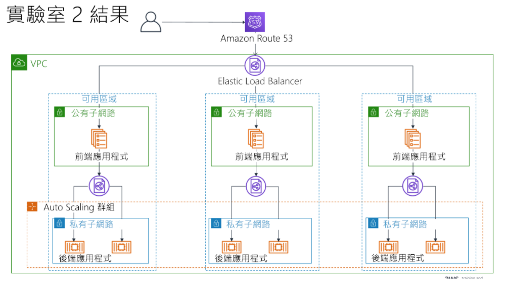
eksctl 建立時 EKS時，每一個node 中都會使用一對網路，分別為public subnet, private subnet，因此預設會建立一個新的 VPC，其中包含
- 三個公有(public)子網路和三個新的私有(private)子網路
- 所以你能在EKS Networking看到Subnets 出現6組subnet
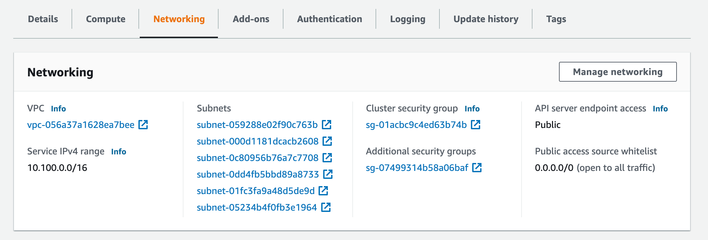
#2 測試：部署Application to EKS by yaml
step1. 取得workload, service sample
- 從git 取得workload, service sample code
1 | cd ~ |
2 | |
3 | git clone https://github.com/brentley/ecsdemo-frontend.git |
4 | git clone https://github.com/brentley/ecsdemo-nodejs.git |
5 | git clone https://github.com/brentley/ecsdemo-crystal.git |
查看deployment，並且部署至EKS
1 | cd ~/ecsdemo-nodejs |
2 | |
3 | cat kubernetes/deployment.yaml |
step2. 檢視 deployment workload
其中deployment yaml 中有以下資訊
metadata: 部署一個名個 ecsdemo-node.jsreplicas: 僅運行一個podcontainer image: 來從node.js:latest 一個網頁的docker
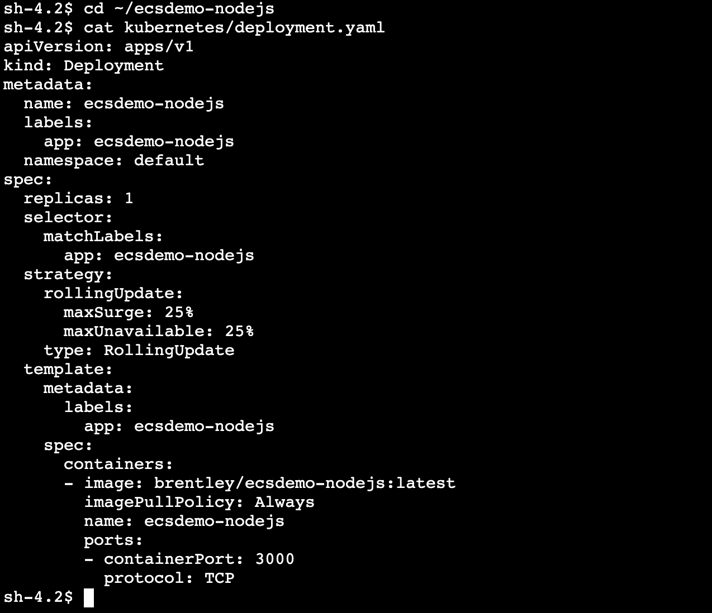
step3. 部署deployment, service
- 執行 kubectl apply 對deployment.yaml 定義的workload 進行部署
- 同時也對service.yaml 定義的endpoint 產生URL
1 | kubectl apply -f kubernetes/deployment.yaml |
2 | kubectl apply -f kubernetes/service.yaml |
3 | |
4 | kubectl get deployment ecsdemo-nodejs |
5 | kubectl get services |
執行結果
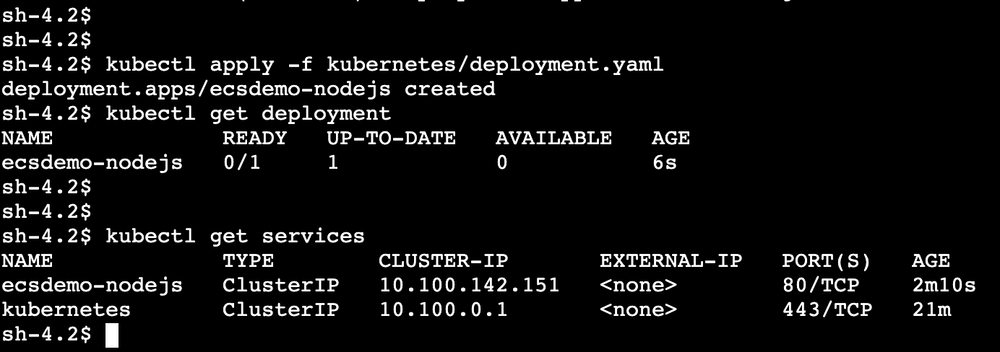
step1. crystal 服務
- 另一隻名為crystal服務，我們必須切換至正確對應的目錄
(ecsdemo-crystal)
1 | cd ~/ecsdemo-crystal |
2 | |
3 | cat kubernetes/deployment.yaml |
其中deployment yaml 中有以下資訊
metadata: 部署一個名個 ecsdemo-crystalreplicas: 僅運行一個podcontainer image: ecsdemo-crystalcontainer port: REST API 對外埠為TCP 3000
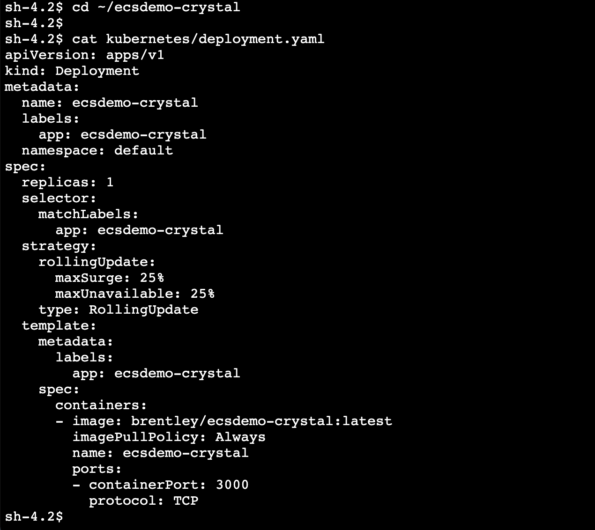
step2. 部署deployment, service
- 執行 kubectl apply 對deployment.yaml 定義的workload 進行部署
- 同時也對service.yaml 定義的endpoint 產生URL
- deployment產生的workload 有時不會即時產出，你可以觀察deploy READY 狀態是否為 1/1
1 | kubectl apply -f kubernetes/deployment.yaml |
2 | kubectl apply -f kubernetes/service.yaml |
3 | |
4 | # 監控部署進度，並確認其成功完成 |
5 | kubectl get deployment ecsdemo-crystal |
執行結果
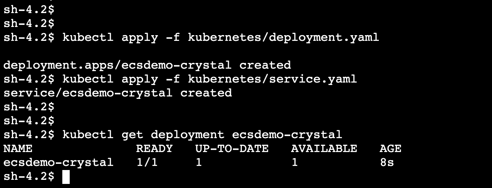
step3. 部署 ecsdemo-frontend
- 前端使用的是Ruby
- 檢視一下 frontend yaml
1 | cd ~/ecsdemo-frontend |
2 | |
3 | cat kubernetes/deployment.yaml |
其中deployment yaml 中有以下資訊
metadata: 部署一個名個 ecsdemo-frontendreplicas: 僅運行一個podcontainer port: REST API 對外埠為TCP 3000- env: 定義二個環境變數，告知crystal_URL, ecsdemo-node.js 關系服務URL
ecsdemo-crystal.default.svc.cluster.local/crystalecsdemo-nodejs.default.svc.cluster.local
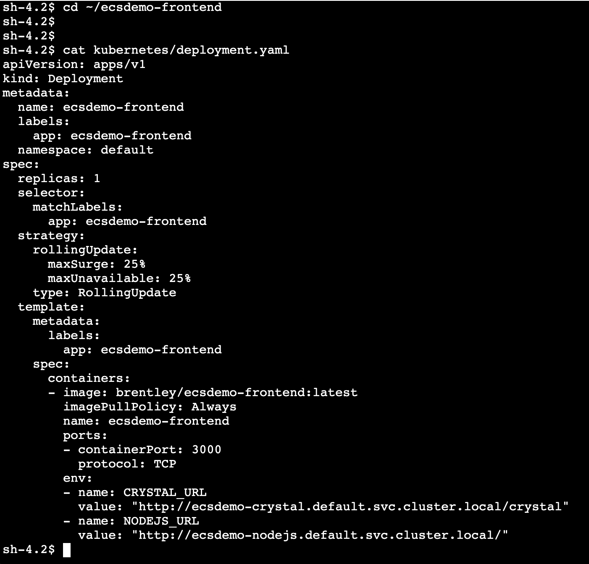
其中service yaml 中有以下資訊
metadata: 部署一個名個 ecsdemo-frontend servicelabel: 篩選條件為 key-value =app:frontendexpose service type: Load Balancer
檢視service.yaml 內容
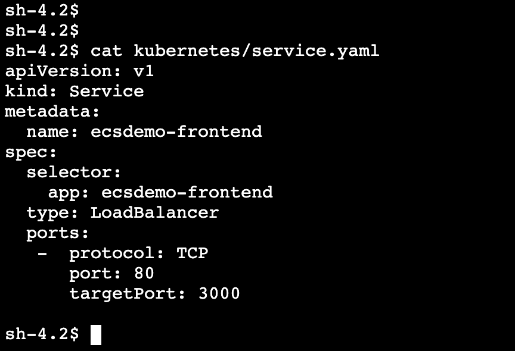
step4. 部署ecsdemo workload, services
1 | kubectl apply -f kubernetes/deployment.yaml |
2 | kubectl apply -f kubernetes/service.yaml |
3 | |
4 | kubectl get deployment ecsdemo-frontend |
5 | kubectl get service ecsdemo-frontend |
執行結果
- 正常的service 執行結果會一組聯合 AWS LB產生出的endpoint，它的值組成
.elb.amazonaws.com結尾的DNS 名稱 - 請用產生的endpoint a2ae2a36089184………….us-west-2
.elb.amazonaws.com進行連線測試
*Load balance可能需要幾分鐘才能開始將流量傳送至前端
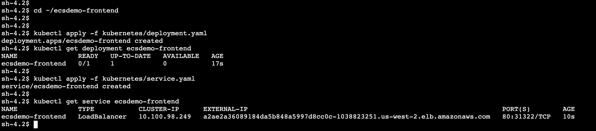
Load Balancer 產生的設定
- 檢視的load balance type 為 Classic，為我自轉換L4 內容
- 此load balance背後服務的特定VPC ID，服務的區域為特定的regional us-west-2a /b /c
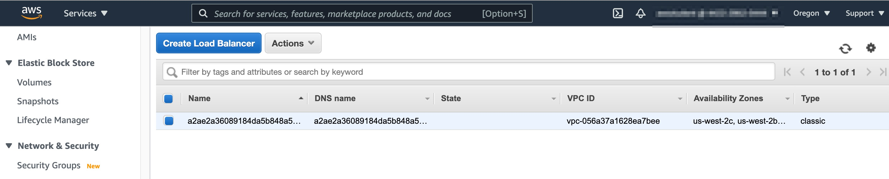
- 這邊顯示的instances，代表的就是EKS的底層三台workload ECS
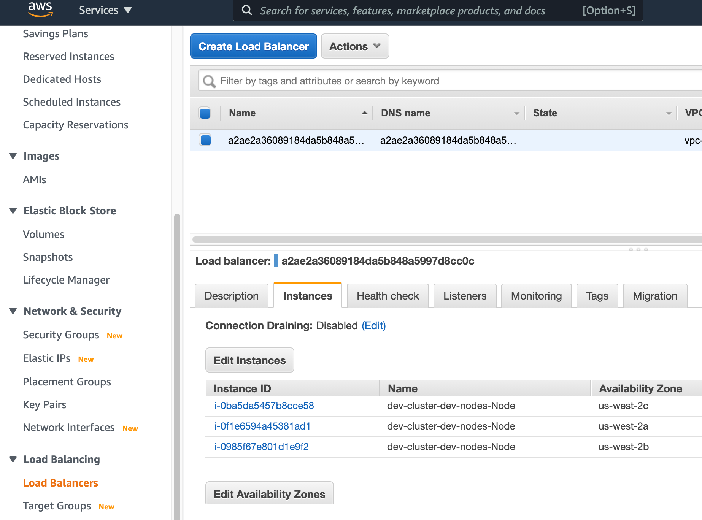
step5. 確認所有的workload, service
- 透過kubectl get service 取得所以上述部署的services
1 | kubectl get deployments |
2 | |
3 | kubectl get service ecsdemo-frontend -o wide |
你格以看到所有的services endpoint一共會有三組，分別為
- ecsdemo-crystal
- ecsdemo-frontend
- ecsdemo-nodjs
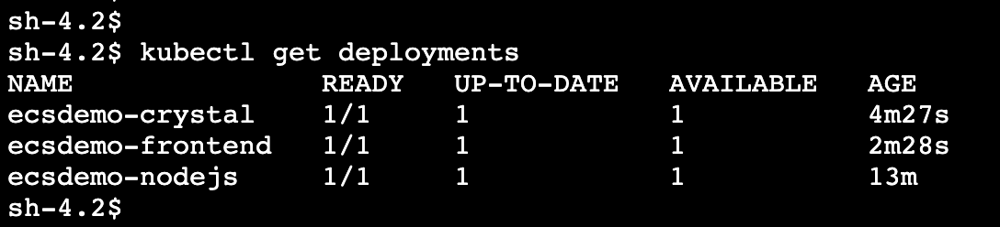
於瀏灠器檢視 DNS Endpoiont
- 可以正常顯示網頁內容
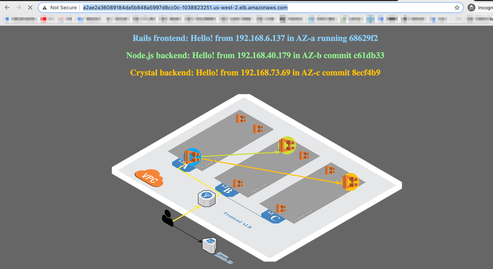
References
[2] https://www.eksworkshop.com/
[3] AWS Documentation whole products
[5] Find the hands-on tutorials for your AWS needs
[6] Amazon Lightsail